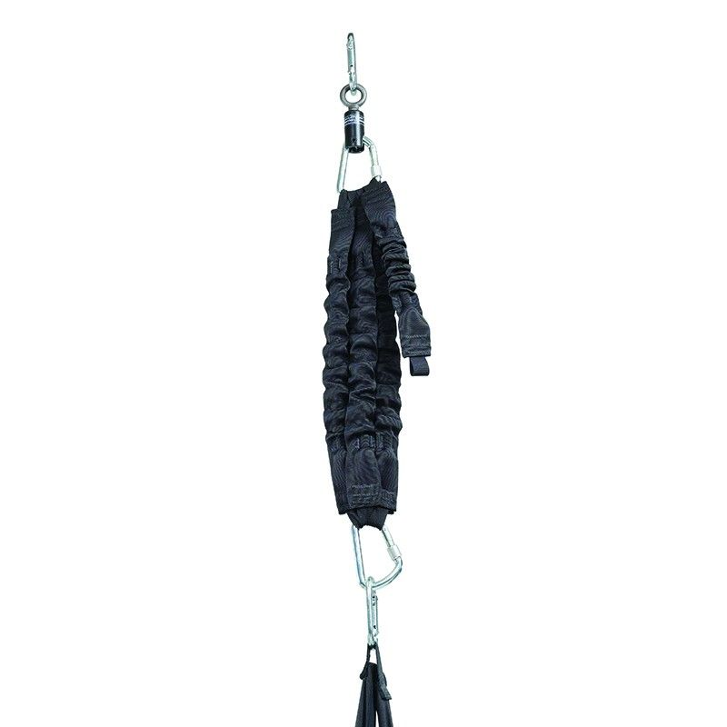

Los columpios que tenemos hoy en bodega, listos para entrega inmediata, con su ficha completa, las unidades disponibles y su valor por unidad.
ParaPatricio Labra
Fecha13 de octubre de 2026
Valores válidos por60 días
OpenCluster Technologies+CORESAM Conchalí
Columpios disponibles para entrega inmediata
Patricio, muy buen día, un placer saludarle. Les compartimos los columpios terapéuticos que tenemos hoy en nuestra bodega en Chile, disponibles para entrega inmediata. En cada uno va su ficha completa, las unidades que tenemos al día de hoy y su valor por unidad, con IVA incluido.
Pueden elegir solo los que les sirvan para su sala; no es necesario llevarlos todos. En dos de ellos les sugerimos un accesorio opcional, que va con su valor aparte.
Stock disponible al 13 de octubre de 2026
Los columpios
Siete columpios de las marcas Southpaw y Advantage, pensados para el trabajo de integración sensorial. Todas las unidades están en nuestra bodega, para entrega inmediata.
Southpaw
Columpio Flexor
Columpio de disco con un poste central acolchado. Se mueve de lado a lado o en círculos, y la intensidad la pone quien lo empuja: desde mecerlo suave hasta sacudirlo, girarlo o hacerlo dar vueltas en órbita.
Para qué sirve en terapia
Da estimulación vestibular, que es la que trabaja el equilibrio y la noción de movimiento.
Da estimulación propioceptiva, que ayuda a sentir el propio cuerpo y su posición.
Ayuda a mejorar el equilibrio y la coordinación, a tomar conciencia del cuerpo y a desarrollar los movimientos grandes.
Especialmente útil con personas en el espectro autista y con discapacidad intelectual.
Cómo se usa
Movimientos de lado a lado o en círculos, con la intensidad ajustada según la fuerza que se aplique.
Medidas y peso
Disco
61 cm de diámetro
Alto
90 cm
Soporta hasta
135 kg
Peso del columpio
8,8 kg
Altura mínima de techo
2,5 m
Materiales
Base alfombrada, con el borde y el poste central muy acolchados.
Qué incluye
Correa de control que se puede sacar y un mosquetón de seguridad.
Para colgarlo
Se cuelga con un dispositivo de rotación y un mosquetón de seguridad, que vienen en el Kit de Suspensión y Ajuste en Altura. Para ajustar la altura se recomienda ese mismo kit.
Disponibles hoy (13 de octubre de 2026): 1 unidadEn bodega, entrega inmediataValor unitario con IVA$1.939.394
Opcional para este columpio
Kit de Suspensión y Ajuste en Altura
Todo lo necesario para colgar el columpio de forma segura y ajustar su altura según cada persona y cada sesión.
Incluye: Mosquetón de seguridad, dispositivo de rotación con su mosquetón, cuerda de terapia de 3 m con bucle en la punta y ajustador de altura con su mosquetón.
Para techos de hasta
4,25 m
Soporta hasta
455 kg
Peso del kit
3 kg
No incluye los pernos que van anclados al techo. Conviene revisar todas las piezas con regularidad, por desgaste.
Disponibles hoy (13 de octubre de 2026): 4 unidadesEn bodega, entrega inmediataValor unitario con IVA$812.600
Advantage
Columpio de Rollo 2 en 1
Dos columpios en uno: un rollo acolchado para subirse encima y balancearse, y una barra de trapecio, que se usa al descolgar el rollo. Así, con un solo equipo se trabajan distintas necesidades en terapia.
Para qué sirve en terapia
Da estimulación vestibular, que trabaja el equilibrio y la coordinación.
Ayuda a tomar conciencia del propio cuerpo.
Fomenta el desarrollo de los movimientos grandes.
Especialmente indicado para personas en el espectro autista y con discapacidad intelectual.
Cómo se usa
Como rollo: la persona va encima del cilindro.
Como trapecio: se descuelga el rollo y se usa la barra.
Medidas y peso
Rollo
20 cm de diámetro × 90 cm de largo
Alto total
175 cm
Soporta hasta
135 kg
Peso del columpio
9 kg
Materiales
Materiales resistentes y acolchados.
Qué incluye
El rollo y la barra de trapecio.
Para colgarlo
Se cuelga con un dispositivo de rotación y un mosquetón de seguridad, que vienen en el Kit de Suspensión y Ajuste en Altura.
Disponibles hoy (13 de octubre de 2026): 2 unidadesEn bodega, entrega inmediataValor unitario con IVA$1.874.833
Southpaw
Columpio Plataforma de Balanceo Modificada
Plataforma de balanceo igual a la clásica, pero con el disco de arriba más grande, para que quede más espacio entre las cuerdas y la puedan usar también jóvenes grandes y adultos.
Para qué sirve en terapia
Permite hacer una gran variedad de movimientos de inclinación y vaivén.
Trabaja el equilibrio y la coordinación.
Da estimulación vestibular y propioceptiva: ayuda a organizar lo que se siente y a percibir el propio cuerpo.
Como la inclinación se gradúa, la sesión se adapta a lo que necesita cada persona.
Cómo se usa
La inclinación se ajusta de forma sencilla con cuatro cuerdas de control, unidas al disco de arriba.
Sirve para niños y adultos.
Medidas y peso
Medidas
78 × 78 cm, 150 cm de alto
Soporta hasta
135 kg
Peso del columpio
10 kg
Materiales
Plataforma con acolchado que se fija con velcro.
Para colgarlo
Se cuelga con un dispositivo de rotación y un mosquetón de seguridad, que vienen en el Kit de Suspensión y Ajuste en Altura. Se recomienda complementarla con el ajuste de altura.
Disponibles hoy (13 de octubre de 2026): 1 unidadEn bodega, entrega inmediataValor unitario con IVA$1.559.778
Southpaw
Columpio Saco Cocoon Niño
Columpio tipo saco, talla niño, que entrega el estímulo de movimiento desde otra perspectiva. El niño va envuelto o sentado dentro, y se siente seguro y contenido. La malla se estira y se adapta a la forma y al tamaño de cada niño.
Para qué sirve en terapia
Da estimulación vestibular, la que trabaja el equilibrio y la noción de movimiento.
Da una gran sensación de seguridad y contención.
Cómo se usa
Se usa en varias posiciones: envuelto o sentado dentro.
Si se sueltan las cintas de adelante y de atrás, se convierte en una hamaca que cuelga de un solo punto y sostiene todo el cuerpo estirado.
Medidas y peso
Alto
127 cm
Soporta hasta
70 kg
Peso del columpio
1 kg
Materiales
Malla de nylon blanda que no pellizca. Cuelga de seis cintas.
Para colgarlo
Debe usarse con un cilindro de rotación y un mosquetón de seguridad, que vienen en el Kit de Suspensión y Ajuste en Altura.
Disponibles hoy (13 de octubre de 2026): 1 unidadEn bodega, entrega inmediataValor unitario con IVA$1.323.531
Southpaw
Columpio Saco Elástico Niño
Columpio tipo saco, talla niño, que envuelve el cuerpo y entrega presión profunda junto con el estímulo de movimiento. Tiene un lado más alto que el otro, para ir sentado de forma más natural. Es suave y cómodo.
Para qué sirve en terapia
La presión profunda calma y ayuda a organizar lo que se siente.
Da estimulación vestibular: trabaja el equilibrio, la coordinación y la orientación en el espacio.
Favorece que el cuerpo se recoja (posición de flexión) y la conciencia del propio cuerpo.
Sirve para pausas sensoriales o momentos de relajación.
Ayuda a trabajar el control de la postura para actividades del día a día, como sentarse en un escritorio o hacer tareas con las manos.
Cómo se usa
Acostado o sentado dentro del saco, con el cuerpo recogido.
Medidas y peso
Largo
125 cm
Soporta hasta
90 kg
Peso del columpio
1 kg
Materiales
Malla de nylon suave y tela resistente.
Qué incluye
Un mosquetón de seguridad.
Para colgarlo
Se cuelga con un dispositivo de rotación y un mosquetón de seguridad, que vienen en el Kit de Suspensión y Ajuste en Altura.
Disponibles hoy (13 de octubre de 2026): 1 unidadEn bodega, entrega inmediataValor unitario con IVA$883.186
Southpaw
Columpio Hamaca Adulto
Hamaca, talla adulto, que cuelga de un solo punto y sostiene el cuerpo de forma completa y pareja: no se junta ni se arruga con el peso de la persona. Funciona como una red, pero sin enredarse.
Para qué sirve en terapia
Da estimulación vestibular, que trabaja el equilibrio y la coordinación.
Ayuda a sentir el propio cuerpo y a orientarse en el espacio.
Su presión suave da seguridad y calma.
Sostiene a la persona con el cuerpo recogido (posición de flexión).
Cómo se usa
Boca abajo o sentado.
Al colgar de un solo punto, se mueve en todas las direcciones.
Medidas y peso
Alto
150 cm
Soporta hasta
135 kg
Peso del columpio
1,8 kg
Materiales
Tela de nylon tejida, suave al tacto, con refuerzos de vinilo resistente para darle fuerza y duración.
Qué incluye
Un mosquetón de seguridad.
Para colgarlo
Se cuelga con un dispositivo de rotación y un mosquetón de seguridad, que vienen en el Kit de Suspensión y Ajuste en Altura.
Disponibles hoy (13 de octubre de 2026): 1 unidadEn bodega, entrega inmediataValor unitario con IVA$750.622
Advantage
Columpio Plataforma de Balanceo
Plataforma de balanceo acolchada, una versión más simple de la plataforma clásica. Cuelga de cuatro puntos y, desde las cuerdas, se provocan balanceos e inclinaciones en cualquier dirección.
Para qué sirve en terapia
Trabaja el equilibrio, la postura y el control del tronco.
El movimiento se gradúa según lo que cada persona tolera.
Da estimulación vestibular completa, en varias direcciones.
El uso continuo fortalece los músculos que dan estabilidad y equilibrio.
Cómo se usa
Acostado boca abajo, sentado, de rodillas o de pie.
Medidas y peso
Medidas
78 × 78 cm, 150 cm de alto
Soporta hasta
135 kg
Peso del columpio
8 kg
Materiales
Base de madera con bordes acolchados y alfombra de nylon que se saca.
Qué incluye
Un mosquetón.
Para colgarlo
Se cuelga con un dispositivo de rotación y un mosquetón de seguridad, que vienen en el Kit de Suspensión y Ajuste en Altura.
Disponibles hoy (13 de octubre de 2026): 2 unidadesEn bodega, entrega inmediataValor unitario con IVA$671.838
Opcional para este columpio

Correa Elástica Vertical
Correa elástica que va entre el techo y el columpio y le agrega rebote hacia arriba y hacia abajo al balanceo, de forma controlada. Da estimulación vestibular y propioceptiva.
Incluye: 2 mosquetones de seguridad con seguro y 4 bucles elásticos de uso industrial: 2 simples y 2 dobles.
Alto
50 cm
Soporta
de 15 a 80 kg; hasta 110 kg cambiando bucles simples por dobles
Peso
1 kg
Los bucles elásticos se desgastan con el uso; cuánto duran depende de la intensidad, la frecuencia y el tiempo de uso.
Disponibles hoy (13 de octubre de 2026): 1 unidadEn bodega, entrega inmediataValor unitario con IVA$732.258
Lo que incluyen estos valoresSolo los productos, con IVA incluido. No incluyen despacho, instalación ni la fijación al techo. Ninguno de los columpios trae su fijación al techo, porque no hay una solución igual para todos los techos: lo recomendable es que un arquitecto, un ingeniero o un constructor revise el techo y les indique en cada caso la mejor forma de fijarlos.
Déjennos saber cuáles les interesan y les preparamos la cotización. Quedo muy pendiente a sus comentarios.
Valores por unidad, con IVA incluido, válidos por 60 días. Solo productos: no incluyen despacho, instalación ni fijación al techo. Stock al 13 de octubre de 2026, sujeto a disponibilidad en bodega.